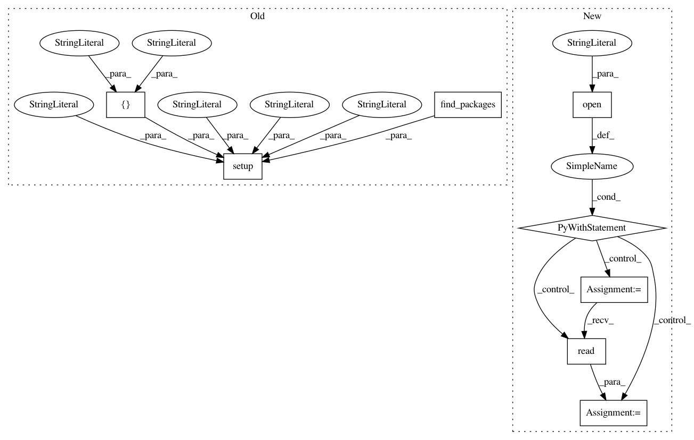

8e2dcb85db4def11e2361cc945f0331969f15b27,setup.py,,,#,52
Before Change
errno = tox.cmdline(args=args)
sys.exit(errno)
setup(
name="snntoolbox",
version="0.1.0", // see https://www.python.org/dev/peps/pep-0440/
description="Spiking Neural Net Conversion",
// long_description=long_description,
author="Bodo Rueckauer",
author_email="bodo.rueckauer@gmail.com",
url="https://github.com/NeuromorphicProcessorProject/snn_toolbox",
download_url="git@github.com:NeuromorphicProcessorProject/snn_toolbox.git",
license="MIT",
classifiers=[
// How mature is this project? Common values are
// 3 - Alpha
// 4 - Beta
// 5 - Production/Stable
"Development Status :: 3 - Alpha",
// Indicate who this project is intended for
"Intended Audience :: Researchers",
// "Topic :: Software Development :: Build Tools",
// License
"License :: OSI Approved :: MIT License",
// Supported Python versions
"Programming Language :: Python :: 2",
"Programming Language :: Python :: 2.6",
"Programming Language :: Python :: 2.7",
"Programming Language :: Python :: 3",
"Programming Language :: Python :: 3.3",
"Programming Language :: Python :: 3.4",
"Programming Language :: Python :: 3.5",
],
keywords="neural networks, deep learning, spiking",
install_requires=[
"future",
"h5py",
"keras",
"matplotlib",
],
setup_requires=["pytest-runner"],
tests_require=["tox", "pytest"],
cmdclass={"test": Tox}, // , "build_doc": BuildDoc},
// Additional groups of dependencies (e.g. development dependencies).
// Install them with $ pip install -e .[dev,test]
// extras_require={
// "dev": ["foo"],
// "test": ["bar"]
// },
packages=find_packages(exclude=["ann_architectures", "deprecated",
"snntoolbox.scotopic", "scripts"]),
package_data={
"snntoolbox": ["config_defaults"]
},
// Include documentation
data_files=[
("", ["README.rst"]),
],
// To provide executable scripts, use entry points in preference to the
// "scripts" keyword. Entry points provide cross-platform support and allow
// pip to create the appropriate form of executable for the target platform.
entry_points={
"console_scripts": ["snntoolbox=bin.run:main"],
"gui_scripts": ["snntoolbox_gui=bin.gui.gui:main"]
},
)
After Change
from setuptools.command.test import test as TestCommand
with open("README.rst") as file:
long_description = file.read()
// Tell setuptools to run "tox" when calling "python setup.py test".
class Tox(TestCommand):
user_options = [("tox-args=", "a", "Arguments to pass to tox")]
def initialize_options(self):
In pattern: SUPERPATTERN
Frequency: 3
Non-data size: 8
Instances
Project Name: NeuromorphicProcessorProject/snn_toolbox
Commit Name: 8e2dcb85db4def11e2361cc945f0331969f15b27
Time: 2017-06-24
Author: bodo.rueckauer@gmail.com
File Name: setup.py
Class Name:
Method Name:
Project Name: HDI-Project/MLBlocks
Commit Name: 835b683b85ff0ff8d812fadf3dad2371cb09c020
Time: 2018-04-09
Author: williamxue@dhcp-18-111-53-173.dyn.mit.edu
File Name: setup.py
Class Name:
Method Name:
Project Name: stellargraph/stellargraph
Commit Name: 2f3f9e2f4ae603e48d0813a691cdd5265f6e38ba
Time: 2018-08-21
Author: docherty@gmail.com
File Name: setup.py
Class Name:
Method Name: